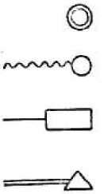

{kind=link}
и работающих
сумма
производства,
млн. руб.
 2
2
Под мануфактурой разумеется, как известно, кооперация, основанная на разделении труда. По своему возникновению мануфактура непосредственно примыкает к описанным выше «первым стадиям капитализма в промышленности». С одной стороны, мастерские с более или менее значительным числом рабочих вводят постепенно разделение труда, и таким образом капиталистическая простая кооперация перерастает в капиталистическую мануфактуру. Приведенные в предыдущей главе статистические данные о московских промыслах наглядно показывают процесс такого возникновения мануфактуры: более крупные мастерские всех промыслов четвертой категории, некоторых промыслов третьей категории и единичных промыслов второй категории применяют систематически разделение труда в широких размерах и потому должны быть отнесены к образцам капиталистической мануфактуры. Ниже будут приведены более подробные данные о технике и экономике некоторых из этих промыслов.
С другой стороны, мы видели, как торговый капитал в мелких промыслах, достигая высшей ступени своего развития, сводит уже производителя на положение наемного рабочего, обрабатывающего чужое сырье за сдельную плату. Если дальнейшее развитие ведет к тому, что
в производство вводится систематическое разделение труда, преобразующее технику мелкого производителя, если «скупщик» выделяет некоторые детальные операции и производит их наемными рабочими в своей мастерской, если наряду с раздачей работы на дома и в неразрывной связи с ней появляются крупные мастерские с разделением труда (принадлежащие нередко тем же скупщикам), - то мы имеем перед собой другого рода процесс возникновения капиталистической мануфактуры *.
В развитии капиталистических форм промышленности мануфактура имеет важное значение, будучи промежуточным звеном между ремеслом и мелким товарным производством с примитивными формами капитала и между крупной машинной индустрией (фабрикой). С мелкими промыслами мануфактуру сближает то, что ее базисом остается ручная техника, что крупные заведения не могут поэтому радикально вытеснить мелкие, не могут совершенно оторвать промышленника от земледелия. «Мануфактура не была в состоянии ни охватить общественное производство во всем его объеме, ни преобразовать его до самого корня (in ihrer Tiefe). Она выделялась как архитектурное украшение на экономическом здании, широким основанием которого было городское ремесло и сельские побочные промыслы» *. С фабрикой мануфактуру сближает образование крупного рынка, крупных заведений с наемными рабочими, крупного капитала, в полном подчинении у которого находятся массы неимущих рабочих.
В русской литературе так распространен предрассудок об оторванности так наз. «фабрично-заводского» производства от «кустарного», об «искусственности»
первого и «народном» характере второго, что мы считаем особенно важным пересмотреть данные о всех важнейших отраслях обрабатывающей промышленности и показать, какова была их экономическая организация после того, как они выросли из стадии мелких крестьянских промыслов, и до того, как они были преобразованы крупной машинной индустрией.
Начнем с промышленности, обрабатывающей волокнистые вещества.
1) Ткацкие промыслы
Ткачество полотняных, шерстяных, хлопчатобумажных, шелковых тканей, позумента и проч. имело у нас повсюду следующую организацию (до появления крупной машинной индустрии). Во главе промысла стояли крупные капиталистические мастерские с десятками и сотнями наемных рабочих; хозяева этих мастерских, обладая крупными капиталами, производили в широких размерах закупку сырья, отчасти перерабатывая его в своих заведениях, отчасти раздавая пряжу и основу мелким производителям (светелочникам, заглодам132, мастеркам, крестьянам-«кустарям» и пр.), которые и ткали у себя дома или в мелких заведениях материи за сдельную плату. В основе самого производства лежал ручной труд, причем между отдельными рабочими распределялись следующие отдельные операции: 1) окраска пряжи; 2) мотанье пряжи (на этой операции специализировались часто женщины и дети); 3) снование пряжи (рабочие-«сновалыцики»); 4) ткачество; 5) наматывание утка для ткачей (работа шпульников, большей частью детей). Иногда в крупных мастерских есть еще особые рабочие «про-девалыцики» (продевают нити основы сквозь глазки ремизок и берда стана) *.
Разделение труда практикуется обыкновенно не только детальное, но и потоварное, т. е. ткачи специализируются на производстве отдельного сорта тканей. Выделение некоторых операций производства для работы на дому не изменяет, конечно, ровно ничего в экономическом строе промышленности подобного типа. Светелки или дома, в которых работают ткачи, представляют из себя лишь внешние отделения мануфактуры. Техническим основанием подобной промышленности является ручное производство с широким и систематическим разделением труда; с экономической стороны мы видим образование громадных капиталов, которые распоряжаются закупкой сырья и сбытом изделий на весьма обширном (национальном) рынке, и в полном подчинении у которых находится масса пролетариев-ткачей; немногочисленные крупные заведения (мануфактуры в узком смысле) господствуют над массой мелких. Разделение труда ведет к выделению из крестьянства специалистов-мастеровых; образуются неземледельческие центры мануфактуры, как, например, село Иваново Владимирской губ. (с 1871 г. - город Иваново-Вознесенск; теперь - центр крупной машинной индустрии); село Великое Ярославской губ. и многие другие села Московской, Костромской, Владимирской, Ярославской губ., превратившиеся теперь уже в фабричные поселения *. Организованная таким образом промышленность обыкновенно разрывается в нашей экономической литературе и статистике на две части: крестьяне, работающие по домам или в не особенно крупных светелках, мастерских и т. п., относятся к «кустарной» промышленности, а более крупные светелки и мастерские попадают в число «фабрик и заводов» (и притом попадают совершенно случайно, так как нет никаких точно установленных и однообразно применяемых правил об отделении мелких заведений от крупных, светелок от мануфактур, рабочих,
занятых на дому, от рабочих, занятых в мастерской капиталиста) *. Понятно, что подобная классификация, ставящая по одну сторону некоторых наемных рабочих, а по другую - некоторых хозяев, занимающих (кроме рабочих в заведении) именно этих наемных рабочих, есть, с научной точки зрения, non-sens *.
Иллюстрируем изложенное подробными данными об одном из промыслов «кустарного ткачества», именно о шелковом ткачестве во Владимирской губ. «Шелковый промысел» - типичная капиталистическая мануфактура. Ручное производство преобладает. Мелких заведений в общем числе заведений большинство (179 заведений из 313, т. е. 57% всего числа, имеют по 1-5 рабочих), но они большей частью несамостоятельны и далеко уступают крупным по своему значению в общем итоге промышленности. Заведений с 20-150 рабочими - 8% всего числа (25), но на них сосредоточено 41,5% всего числа рабочих и они дают 51% общей суммы производства. Из всего числа рабочих в промысле (2823) - наемных 2092, т. е. 74,1%. «В производстве встречается и потоварное и детальное разделение труда». Ткачи редко совмещают в себе уменье работать и «бархат» и «гладь» (два главных рода товаров в этом производстве). «Детальное разделение труда внутри мастерской наиболее строго проведено лишь в крупных фабриках» (т. е. в мануфактурах) «с наемными рабочими». Вполне самостоятельных хозяев только 123, которые одни только закупают сами материал и сбывают продукт; у них - 242 семейных рабочих, и «на них работает 2498 рабочих наемных, полу-
чающих большею частью сдельную плату», - всего, след., 2740 рабочих или 97% общего числа рабочих. Ясно, таким образом, что раздача работы на дома этими мануфактуристами при посредстве «заглод» (светелочников) отнюдь не составляет особой формы промышленности, а лишь одну из операций капитала в мануфактуре. Г-н Харизо-менов справедливо замечает, что «масса мелких заведений, при ничтожном числе крупных, незначительное число рабочего персонала, какое причитается в среднем выводе на одно заведение (71/2 чел.), маскируют истинный характер производства» (l. c., 39). Специализация занятий, свойственная мануфактуре, сказывается здесь наглядно в отделении промышленников от земледелия (бросают землю, с одной стороны, обнищавшие ткачи, с другой - крупные мануфактуристы) и в образовании особого типа промышленного населения, которое живет несравненно «чище», чем земледельцы, и смотрит сверху вниз на мужика (l. c., 106). Наша фабрично-заводская статистика регистрировала всегда лишь случайно выхваченную частичку данного промысла *.
«Позументный промысел» в Московской губ. представляет из себя капиталистическую мануфактуру с совершенно аналогичной организацией *. Точно так же сарпиноч-ный промысел в Камышинском уезде Саратовской губ. По «Указателю» за 1890 г. здесь была 31 «фабрика» с 4250 рабочими, с суммой производства 2(35 тыс. руб., а по «Перечню» - 1 «раздаточная контора» с 33 рабочими в заведении, с суммой производства в 47 тыс. руб. (Значит, в 1890 г. смешаны были рабочие в заведении и на стороне!) По местным исследованиям, произ-
водство сарпинки занимало в 1888 г. около 7000 станов с суммой производства в 2 млн. руб., причем «всем делом заправляют несколько фабрикантов», на которых и работают «кустари», в том числе дети 6-7 лет за плату 7-8 коп. в день («Отч. и иссл.», т. ГГ.Ит. д.
2) Другие отрасли текстильной индустрии Валяльное производство
Если судить по официальной фабр.-зав. статистике, то войлочное производство представляет весьма слабое развитие «капитализма»: во всей Евр. России всего 55 фабрик с 1212 рабочими и с суммой производства 454 тыс. рублей («Указ.» за 1890 г.). Но эти цифры показывают лишь случайно вырванный кусок широко развитой капиталистической промышленности. Нижегородская губерния занимает первое место по развитию «фабрично-заводского» войлочного производства, а в этой губернии главным центром данной промышленности является город Арзамас и подгородная Выездная Слобода (в них 8 «фабрик» с 278 рабочими и с суммой производства в 120 тыс. руб.; в 1897 г. - 3221 жит., а в с. Красном - 2835). Как раз в окрестности этих центров развито «кустарное» войлочное производство, занимающее около 243 заведений, 935 раб. с суммой произв. 103 847 руб. («Труды куст, ком.», V). Чтобы показать наглядно экономическую организацию войлочного производства в этом районе, попробуем употребить способ графический, обозначая особыми знаками производителей, занимающих особое место в общем строе промысла.
Графическое изображение организации валяльного промысла
Цифры означают число рабочих (приблизительное) *.

вполне??? самостоятельные хозяева, закупающие шерсть из первых рук
самостоятельные хозяева, закупающие шерсть из вторых рук (у кого - показывает волнистая черта)
несамостоятельные производители, работающие на хозяев из их материала за сдельную плату (на кого работают - показывает одна сплошная черта)
наемные рабочие (у кого - две сплошные черты)
Данные, поставленные внутри составленных из пунктирных линий четырехугольников, относятся к так наз. «кустарной» промышленности, остальные - к так наз. «фабрично-заводской».
Ясно, таким образом, что отделение «фабрично-заводской» и «кустарной» промышленности чисто искусственное, что мы имеем перед собой единый и целостный строй промысла, который вполне подходит под понятие капиталистической мануфактуры **. С технической
стороны, это - ручное производство. Организация работы - кооперация, основанная на разделении труда, которое наблюдается здесь в двоякой форме: и потоварное (одни селения готовят кошмы, другие - сапоги, шляпы, стельки и т. д.) и детальное (напр., все село Вас. Враг катает шляпы и стельки для с. Красного, где полуфабрикат окончательно отделывается, и т. д.). Кооперация эта - капиталистическая, ибо во главе ее стоит крупный капитал, который создал крупные мануфактуры и подчинил себе (посредством сложной сети экономических отношений) массу мелких заведений. Громадное большинство производителей превратилось уже в детальных рабочих, работающих на предпринимателей при крайне антигигиеничных условиях *. Давность промысла и вполне сложившиеся капиталистические отношения вызывают отделение промышленников от земледелия: в селе Красном земледелие в полном упадке, и быт жителей отличается от земледельческого *. Совершенно аналогична организация валяльного промысла и в целом ряде других районов. В Семеновском уезде той же губ. в 363 общинах было занято этим промыслом в 1889 г. 3180 дворов с 4038 работниками. Из 3946 рабочих только 752 работали на продажу, 576 состояли в наемных рабочих и 2618 работали на хозяев большей частью из их материала. 189 дворов раздавали работу в 1805 дворов. Крупные хозяева имеют мастерские с наемными рабочими, число которых доходит до 25, и покупают шерсти тысяч на 10 в
год *. Крупных хозяев зовут тысячниками; их оборот составляет 5-100 тыс. руб.; они имеют свои склады шерсти, свои лавки для продажи изделий **. В Казанской губ. «Перечень» считает 5 валяльных «фабрик» с 122 рабочими, суммой произв. 48 тыс. руб. и с 60 рабочими на стороне. Очевидно, эти последние фигурируют и в числе «кустарей», о которых мы читаем, что они передко работают на «скупщиков» и что есть заведения, имеющие до 60 рабочих ***. Из 29 войлочных «фабрик» Костромской губ. 28 сосредоточены в Кинешемском уезде, имея 593 рабочих в заведении и 458 на стороне («Перечень», с. 68-70; в двух предприятиях рабочие имеются только на стороне. Появляются уже и паровые двигатели). Из «Трудов ком.» (XV) мы знаем, что из 3908 шерстобитов и валяльщиков этой губернии 2008 сосредоточены именно в Кинешемском уезде. Костромские валяльщики большей частью несамостоятельны или состоят в наемных рабочих, работая в крайне антигигиенических мастерских ****. В Калязинском уезде Тверской губ. мы видим, с одной стороны, домашнюю работу на «фабрикантов» («Перечень», 113), ас другой стороны, именно этот уезд - гнездо «кустарей»-валялыциков; их выходит из этого уезда до 3000 чел., которые проходят через пустошь «Зимняк»133 (в 60-х годах здесь была суконная фабрика Алексеева), образуя «громадный рабочий рынок шерстобитов и валяльщиков» *****. В Ярославской губ. - тоже работа на стороне на «фабрикантов» («Перечень», 115) и тоже «кустари», работающие на хозяев-торговцев из их шерсти, и т. д.
3) Шляпное и шапочное, пеньковое и веревочное производства
Статистические данные о шляпном промысле Московской губ. были приведены нами выше ******. Из них видно, что 2/3 всего производства и всего числа рабочих
сосредоточены в 18 заведениях, имеющих в среднем по 15,6 наемных рабочих *. «Кус-тари»-шляпники исполняют лишь часть операций по производству шляп: они изготовляют колпаки, сбываемые московским торговцам, имеющим свои «отделочные заведения»; в свою очередь, на «кустарей»-шляпников работают по домам «стрижевщицы» (женщины, которые стригут пух). Таким образом, в общем и целом мы видим здесь капиталистическую кооперацию, основанную на разделении труда и опутанную целою сетью разнообразных форм экономической зависимости. В центре промысла (с. Клено-во Подольского уезда) явственно сказалось отделение промышленников (главным образом наемных рабочих) от земледелия *, и повышение уровня потребностей населения: живут «много чище», одеваются в ситцы, даже в сукно, заводят самовары, оставляют старинные обычаи и пр., вызывая этим горькие сетования местных почитателей старины *. Новая эпоха вызвала даже появление отхожих шляпников.
Типичная капиталистическая мануфактура - шапочный промысел в с. Молвитине Буйского уезда Костромской губернии *. «Главное занятие с. Молвитина и 36 деревень - шапочный промысел». Земледелие забрасывают. После 1861 г. промысел сильно развился; швейные машины вошли в широкое употребление. В Молвитине 10 мастерских работают круглый год, имея по 5-25 мастеров и по 1-5 мастериц. «Лучшая мастерская делает оборот приблизительно на 100 000 руб. в год» *. Есть и раздача работы на дома (напр., материал для тулей женщины изготовляют по домам). Разделение труда калечит рабочих, работающих при самых неблагоприятных гигиенических условиях и наживающих обыкновенно чахотку. Продолжительное существование промысла (более 200 лет) выработало
чрезвычайно искусных мастеров: молвитинские мастера известны и в столицах и в далеких окраинах.
Центром пенькового промысла в Медынском уезде Калужской губернии является с. Полотняный Завод. Это - большое село (по переписи 1897 г. 3685 жителей) с населением безземельным и очень промышленным (свыше 1000 «кустарей»); это - центр «кустарных» промыслов Медынского уезда *. Пеньковый промысел организован так: у крупных хозяев (их трое; самый крупный - Ерохин) есть мастерские с наемными рабочими и более или менее значительные оборотные капиталы на закупку сырья. Пеньку чешут на «фабрике», - прядут на дому пряхи, - крутят на фабрике и на дому. Снуют на фабрике, - ткут на фабрике и дома. В 1878 г. считали в пеньковом промысле 841 «кустаря»; Ерохин считается и «кустарем» и «фабрикантом», показывающим у себя 94-64 рабочих в 1890 и 1894-1895 гг.; по «Отч. и иссл.» (т. II, с. 187), на него работают «сотни крестьян».
В Нижегородской губ. центр веревочного промысла - тоже неземледельческие промышленные села Нижний и Верхний Избылец Горбатовского уезда *. По данным г. Карпова («Труды ком.», вып. VIII), это - один Горбатово-Избылецкий веревочно-канатный район; часть мещан гор. Горбатова тоже занята промыслом, да и села В. и Н. Избылец - «почти часть гор. Горбатова», и жители живут по-мещански, пьют каждый день чай, одеваются в покупное, едят белый хлеб. Всего занято промыслом до 2/3 населения 32-х селений, именно до 4701 работника (2096 муж. пола и 2605 жен. пола) с производством около 11/2 млн. руб. Промысел существует около 200 лет и теперь падает. Организация такова: все работают на 29 хозяев из их материала, получая сдельную плату, находясь «в полнейшей зависимости от хозяев» и работая по 14-15 часов в сутки. По данным земской статистики (1889 г.) промыслом
занято 1699 рабочих мужчин (плюс 558 женщин и мужчин нерабочего возраста). Из 1648 работников только 197 работают на продажу, 1340 - на хозяина и 111 - наемные работники в мастерских 58 хозяев. Из числа 1288 надельных дворов обрабатывают сами всю пашню только 727, т. е. немногим более Х1ъ Из 1573 надельных работников вовсе не занимаются земледелием 306, т. е. 19,4%. Обращаясь к вопросу о том, кто эти «хозяева», мы должны уже из области «кустарной» промышленности перейти к «фабрично-заводской». По «Перечню» 1894/95 г. здесь были две веревочные фабрики, имеющие 231 рабочего в заведениях и 1155 рабочих на стороне, с суммой произв. 423 тыс. руб. Оба заведения обзавелись уже механическими двигателями (которых не было ни в 1879, ни в 1890 г.), и мы, след., наглядно видим здесь переход капиталистической мануфактуры в капиталистическую машинную индустрию, превращение «кустарных» давальцев и скупщиков в настоящих фабрикантов.
В Пермской губ. кустарная перепись 1894/95 г. зарегистрировала в губернии 68 ка-натно-веревочных крестьянских заведений с 343 рабочими (из них 143 наемных), с суммой произв. 115 тыс. руб. Во главе этих мелких заведений стоят сосчитанные вместе крупные мануфактуры: у 6 хозяев 101 рабочий (91 наемный) и сумма произв. 81 тыс. руб. Строй производства в этих крупных заведениях может служить наиболее рельефным образчиком «органической мануфактуры» (по Марксу)134, т. е. такой мануфактуры, в которой различные рабочие исполняют различные операции последовательной переработки сырья: 1) трепанье пеньки; 2) чесание; 3) прядение; 4) свертывание в «бухтины»; 5) смоление; 6) разматывание на барабане; 7) пропускание ниток со станка в продырявленную доску; 8) про-
пускание нитей в чугунную втулку; 9) скручивание жгутов, свивание канатов и собирание их *.
По-видимому, однородна организация пенькообрабатывающей промышленности и в Орловской губернии: из значительного числа мелких крестьянских заведений выделяются крупные мануфактуры, преимущественно в городах, и попадают в число «фабрик и заводов» (по «Указ.» за 1890 г. в Орловской губ. 100 пенькотрепальных фабрик с 1671 раб. и с суммой произв. 795 тыс. руб.). Крестьяне работают в пеньковом промысле «на купцов» (вероятно, на тех же мануфактуристов) из их материала, за сдельную плату, причем работа делится на специальные операции: «трепачи» треплют пеньку; «прядильщики» прядут; «бороделыцики» очищают от костры; «колесники» вертят колесо. Работа очень трудная; многие заболевают чахоткой и «грызыо». Пыль такая, что «без привычки не пробудешь 1/4 часа». Работают в простых сараях от зари до зари с мая по сентябрь *.
4) Производства по обработке дерева
Наиболее типичным образчиком капиталистической мануфактуры в этой области является сундучный промысел. По данным, напр., пермских исследователей, «организация его такова: несколько крупных хозяев, имеющих мастерские с наемными рабочими, закупают материалы, изготовляют отчасти изделия у себя, но главным образом раздают материал мелким детальным мастерским, а в своих мастерских собирают части сундука и, по окончательной отделке, отправляют товар на рынок. Разделение труда... применяется в производстве в широких размерах: изготовление целого сундука делится на 10-12 операций, исполняемых каждая в отдельности деталыциками-кустарями.
Организация промысла - объединение детальных рабочих (Teilarbeiter, как они называются в «Капитале») под командою капитала» *. Это - разносоставная мануфактура (heterogene Manufaktur, по Марксу135), в которой различные рабочие исполняют не последовательные операции по переработке сырья в продукт, а изготовляют отдельные части продукта, собираемые потом вместе. Предпочтение капиталистами домашней работы «кустарей» объясняется отчасти указанным характером этой мануфактуры, отчасти (и главным образом) более дешевой оплатой труда домашних рабочих **. Заметим, что сравнительно крупные мастерские в этом промысле попадают иногда и в число «фабрик и заводов»***.
По всей вероятности, так же организован сундучный промысел во Владимирской губ. в Муромском уезде, где «Перечень» указывает 9 «фабрик» (все ручные) с 89 раб. в заведении и 114 на стороне, суммой произв. 69 810 руб.
Аналогична организация экипажного промысла, напр., в Пермской губ.: из массы мелких заведений выделяются сборные мастерские с наемными рабочими; мелкие кустари представляют из себя детальных рабочих, изготовляющих части экипажей как из своего материала, так и из материала «скупщиков» (т. е. владельцев сборных мастерских) *. О полтавских «кустарях»-экипажниках мы читаем, что в посаде Ардони ость мастерские с наемными рабочими и с раздачей работы на дома (человек до 20 сторонних рабочих у более крупных хозяев) *. В Казанской губ. в производстве городских экипажей замечается потоварное разделение труда: одни селения производят только сани, другие только повозки и т. д. «Городские экипажи, совсем собранные в деревне (но без оковки, без колес и
оглоблей), поступают к казанским торговцам-заказчикам, а от этих последних уже к кустарям-кузнецам для оковки. Затем эти изделия снова возвращаются в городские лавки и мастерские, где окончательно отделываются, т. е. обиваются и окрашиваются... Казань, где прежде оковывались городские экипажи, мало-помалу передала эту работу кустарям, работающим за более дешевую цену, чем городские мастера...» *. Следовательно, капитал предпочитает раздачу работы на дома, так как этим удешевляется рабочая сила. Организация экипажного промысла, как видно из приведенных данных, представляет из себя в большинстве случаев систему кустарей-деталыциков, подчиненных капиталу.
Громадное промышленное село Воронцовка Павловского уезда Воронежской губ. (в 1897 г. 9541 житель) представляет из себя как бы одну мануфактуру деревянных изделий («Труды ком. и т. д.», вып. IX, статья свящ. Митр. Попова). Промыслом занято больше 800 домов (и еще некоторые дворы слободы Александровки, имеющей более 5000 жителей). Изготовляются телеги, тарантасы, колеса, сундуки и т. п., всего на сумму до 267 тыс. руб. Самостоятельных хозяев - менее трети; наемные рабочие в мастерских хозяев редки *. Большинство работает по заказу местных крестьян-торговцев за сдельную плату. Рабочие в долгу у хозяев и изнуряются на тяжелой работе: народ становится слабее. Население слободы - промышленное, не деревенского типа, земледелием почти не занимается (кроме огородничества), имея нищенские наделы. Промысел существует издавна, отвлекая население от земледелия и усиливая все более раскол богачей и бедноты. Население питается скудно, одевается «щеголеватее прежнего», «но не по средствам» - во все покупное. «Населением овладел дух промышленный и торговый». «Почти всякий, не знающий ремесла, чем-либо торгует... Под влиянием промышленности и торговли
крестьянин стал вообще развязнее, что его сделало более развитым и изворотливым» *.
Знаменитый ложкарный промысел Семеновского уезда Нижегородской губ. приближается по своей организации к капиталистической мануфактуре; правда, здесь нет крупных мастерских, выделяющихся из массы мелких и господствующих над ними, но зато мы видим здесь глубоко укоренившееся разделение труда и полное подчинение массы детальных рабочих капиталу. До своей выделки ложка проходит не менее 10 рук, причем некоторые операции скупщики производят либо особыми наемными рабочими, либо раздают специалистам-рабочим (напр., окраску); некоторые селения специализируются на отдельных детальных операциях (напр., д. Дьяково на обточке ложек, производимой по заказу скупщика за сдельную плату, деревни Хвостикова, Дианова, Жужел-ки на окраске ложки и т. д.). Скупщики закупают оптом лес в губерниях Самарской и др., отправляя туда артели наемных рабочих, имеют склады сырого материала и изделий, отдают на выделку кустарям наиболее ценные виды материала и пр. Масса детальных рабочих составляет один сложный производительный механизм, вполне подчиненный капиталу. «Для ложкарей все равно, работают ли они по найму на содержании хозяина и в его помещении или копошатся в своих избах, потому что в этом промысле, как и в других, все уже взвешено, измерено и сочтено. Больше крайне необходимого, без чего жить нельзя, ложкарь не выработает» *. Вполне естественно, что при таких условиях капиталисты, главенствующие над всем производством, не спешат заводить мастерские, и промысел, основанный на ручном искусстве и на традиционном разделении труда, прозябает в своей забро-
шенности и неподвижности. Привязанные к земле «кустари» точно застыли в своей рутине: как в 1879 г., так и в 1889 г. они продолжают все еще считать деньги по-старинному на ассигнации, а не на серебро.
Во главе игрушечного промысла Московской губ. стоят точно так же заведения типа капиталистической мануфактуры *. Из 481 мастерской 20 имеют больше 10 рабочих. В производстве очень широко применяется и потоварное и детальное разделение труда, в громадной степени повышающее производительность труда (ценою калечения рабочего). Напр., доходность одной мелкой мастерской определена в 20% продажной цены, а крупной - в 58% *. Разумеется, у крупных хозяев и основной капитал значительно выше; встречаются и технические приспособления (напр., сушильни). Центр промысла - неземледельческое поселение, Сергиевский посад (в нем 1055 рабочих из 1398 и сумма произв. 311 тыс. руб. из 405 тыс. руб.; жителей, по переписи 1897 г., - 15 155). Автор очерка об этом промысле, указывая на преобладание мелких мастерских и т. п., считает переход промысла в мануфактуру более вероятным, чем в фабрику, но все же маловероятным. «И на будущее время, - говорит он, - мелкие производители всегда будут иметь возможность более или менее успешно конкурировать с крупным производством» (l. c., 93). Автор забывает, что в мануфактуре всегда техническим базисом остается то же ручное производство, как и в мелких промыслах; что разделение труда никогда не может составить столь решительного преимущества, которое бы совершенно вытеснило мелких производителей, особенно, если последние прибегают к таким средствам, как удлинение рабочего дня и т. п.; что мануфактура никогда не в состоянии бывает охватить всего производства, оставаясь лишь надстройкой над массой мелких заведений.
5) Производства по обработке животных продуктов. Кожевенное и скорняжное
Наиболее обширные районы кожевенной промышленности представляют особенно рельефные примеры полной слитости «кустарной» и фабр.-заводской промышленности, примеры весьма развитой (и вглубь и вширь) капиталистической мануфактуры. Характерно уже то, что губернии, выдающиеся размерами «фабр.-заводской» кожевенной промышленности (Вятская, Нижегородская, Пермская, Тверская), отличаются особенным развитием «кустарных» промыслов этой отрасли.
В селе Богородском Горбатовского уезда Нижегородской губернии по «Указ.» за 1890 г. было 58 «фабрик» с 392 раб. и с суммой произв. 547 тыс. руб., а но «Перечню» за 1894/95 г. - 119 «заводов» с 1499 раб. в заведении и 205 раб. на стороне, при сумме произв. 934 тыс. руб. (эти последние цифры охватывают только обработку животных продуктов - главную отрасль местной промышленности). Но эти данные изображают лишь верхушки капиталистической мануфактуры. Г-н Карпов считал в 1879 г. в этом селе и его районе более 296 заведений с 5669 рабочими (из них очень многие работают дома на капиталистов) с суммой произв. ок. 1490 тыс. руб. в промыслах: кожевенном, склеивании подбора из стружки, плетении корзин (для товара), шорном, хомутинном, рукавичном и особо стоящем - гончарном. Земская перепись 1889 года насчитывала в этом районе 4401 промышленника, причем из 1842 рабочих, о которых даны подробные сведения, 1119 заняты по найму в чужих мастерских и 405 работают по домам на хозяев *. «Богородское, с его 8-тысячным населением, представляет один громадный кожевенный завод с непрерывающейся деятельностью *. Точнее, это - «органическая» мануфактура, подчиненная небольшому числу крупных капиталистов, которые закупают сырье, выделывают кожи, производят из них разнообразные изделия, нанимая для производства
несколько тысяч совершенно неимущих рабочих и главенствуя над мелкими заведениями *. Существует этот промысел очень давно, с XVII века; в истории промысла особенно памятны помещики Шереметевы (начало 19 века), значительно способствовавшие развитию промысла и защищавшие, между прочим, давным-давно образовавшийся здесь пролетариат от местных богачей. После 1861 г. промысел сильно развился, и особенно выросли крупные заведения на счет мелких; века промысловой деятельности выработали из населения замечательно искусных мастеров, которые разнесли производство по России. Упрочившиеся капиталистические отношения повели к отделению промышленности от земледелия: с. Богородское не только само почти не занимается земледелием, но и отрывает от земли окрестных крестьян, переселяющихся в этот «город» *. Г-н Карпов констатирует в этом селе «полное отсутствие всякой крестьянствен-ности в жителях», «никак не подумаешь, что находишься в селе, а не в городе». Это село далеко позади оставляет и Горбатов и все остальные уездные города Нижегородской губ., за исключением разве Арзамаса. Это - «один из значительных торговых и промышленных центров губернии, производящий и торгующий на миллионы». «Район промышленного и торгового влияния Богородского очень обширен, но ближайшим образом с богородской промышленностью связана промышленность его окрестностей приблизительно на 10-12 верст в окружности. Эта промышленная окрестность представляется как бы продолжением самого Богородского». «Богородские
жители нисколько не похожи на обыкновенных серых мужичков: это - мещане-ремесленники, народ смышленый, бывалый, презирающий крестьянина. Обстановка жизни и склад нравственных понятий богородского жителя вполне мещанские». К зто-му остается добавить, что промышленные села Горбатовского уезда отличаются сравнительно высокой грамотностью населения: так, процент грамотных и учащихся мужчин и женщин составляет для сел Павлова, Богородского и Ворсмы - 37,8% и 20,0%, а для остальной части уезда - 21,5% и 4,4% (см. земско-стат. «Материалы»). Совершенно аналогичные отношения (только в масштабе меньшего размера) представляют из себя промыслы по обработке кожи в селах: Катунки и Городец Балахнинского уезда, Большое Мурашкино Княгининского уезда, Юрино Васильского уезда, Тубанаевка, Спасское, Ватрас и Латышиха того же уезда. Те же неземледельческие центры с «округом» окрестных земледельческих поселений, те же разнообразные промыслы и многочисленные мелкие заведения (а также рабочие на дому), подчиненные крупным предпринимателям, капиталистические мастерские которых попадают кое-когда в число «фабрик и заводов» *. Не входя в статистические подробности, которые не содержат ничего нового по сравнению с вышеизложенным, приведем только следующую чрезвычайно интересную характеристику села Катунки **:
«Некоторая патриархальная простота отношений между хозяевами и рабочими, впрочем, не бросающаяся в глаза с первого взгляда и, к сожалению, (?) с каждым годом все более и более исчезающая, свидетельствует о кустарном характере промыслов (?). Фабричный характер как промыслов, так и
населения начинает обнаруживаться только в последнее время, под влиянием в особенности города, сношения с которым облегчились с учреждением пароходства. В настоящее время село смотрит уже вполне промышленным селением: полное отсутствие всяких признаков сельского хозяйства, тесная, приближающаяся к городской, постройка домов, каменные палаты богачей и рядом с ними жалкие лачуги бедняков, скученные в центре селения длинные деревянные и каменные здания заводов - все это резко отличает Катунки от соседних селений и ясно указывает на промышленный характер местного населения. Сами жители некоторыми чертами своего характера точно так же напоминают уже сложившийся на Руси тип «фабричного»: некоторая щеголеватость в домашней обстановке, в костюме, в манерах, разгульный в большинстве случаев образ жизни и малая забота о завтрашнем дне, смелая, подчас витиеватая речь, некоторая гордость пред деревенским мужичьем - все эти черты общи у них со всем фабричным русским людом» *.
В г. Арзамасе Нижегородской губернии «фабр.-заводская» статистика считала в 1890 г. всего 6 кожевенных заводов с 64 рабоч. («Указ.»); и это - лишь небольшая частичка капиталистической мануфактуры, обнимающей промыслы скорняжный, сапожный и др. Те же заводчики занимают рабочих на дому и в г. Арзамасе (в 1878 г. их считали до 400 чел.) и в 5-ти подгородных селениях, где из 360 домов скорняков 330 работают на арзамасских купцов из их материала, трудясь по 14 часов в сутки за 6-9 руб. в месяц *; поэтому-то скорняки - народ бледнолицый, слабосильный, вырождающийся. В подгородной Выездной Слободе из 600 домов сапожников 500 работают на хозяев, получая кроеные сапоги. Промысел старинный, ок. 200 лет, и все растет и развивается. Земледелием жители почти не занимаются, и весь облик их жизни - чисто городской, живут «роскошно». То же относится и к вышеупомянутым скорняжным селениям, жители которых «смотрят с презрением на крестьянина-земледельца, называя его «деревней-матушкой»» **.
Совершенно то же самое мы видим в Вятской губ. Вятский и Слободской уезды являются центрами
и «фабр.-заводского» и «кустарного» кожевенного и скорняжного производств. В Вятском уезде кустарные кожевенные заводы сосредоточены в окрестностях города, «дополняя» промышленную деятельность больших заводов , - напр., работая на крупных заводчиков; на них же работают в большинстве случаев кустари-шорники и клеевары. У скорняжных заводчиков сотни рабочих заняты по домам шитьем овчин и пр. Это - одна капиталистическая мануфактура с отделениями: овчиннодубильным-овчинношубным, кожевенным-шорным и т. д. Еще рельефнее сложились отношения в Слободском уезде (центр промыслов - подгородная слобода Демьянка); здесь мы видим небольшое число крупных заводчиков , стоящих во главе кустарей-кожевников (870 чел.), сапожников и рукавичников (855 чел.), овчинников (940 чел.), портных (309 чел. шьют полушубки по заказу капиталистов). Вообще подобная организация производства кожевенных изделий распространена, по-видимому, очень широко: напр., в гор. Сарапуле Вятской губ. «Перечень» считает 6 кожевенных заводов, которые вместе с тем изготовляют и обувь, занимая кроме 214 рабочих в заведении еще 1080 рабочих на стороне (стр. 495). Куда девались бы наши «кустари», эти подкрашенные всяческими Маниловыми представители «народной» промышленности, если бы все русские купцы и фабриканты так же подробно и точно подсчитывали занимаемых ими рабочих на стороне! ***
Здесь же следует упомянуть промышленное село Рассказово Тамбовского уезда и губ. (в 1897 г.-
8283 жит.) - центр и «фабр.-заводской» промышленности (суконные, мыловаренные, кожевенные, винокуренные заводы) и «кустарной», причем последняя тесно связана с первой; промыслы - кожевенный, войлочный (до 70 хозяев, есть заведения с 20-30 раб.), клееваренный, сапожный, чулочный (нет двора, где бы не вязали чулки из шерсти, раздаваемой по весу «скупщиками») и т. п. Около этого села - слоб. Белая Поляна (300 дворов), известная промыслами того же рода. В Моршанском уезде центр кустарных промыслов - село Покровское-Васильевское, в то же время и центр фабрично-заводской промышленности (см. «Указ.» и «Отч. и иссл.», т. III). В Курской губ. замечательны, как промышленные селения и центры «кустарных» промыслов, слободы: Ве-лико-Михайловка (Новооскольского уезда, в 1897 г. - 11 853 жит.), Борисовка (Грай-воронского у., 18 071 жит.), Томаровка (Белгородского уезда, 8716 жит.), Мирополье (Суджанского уезда, более 10 тыс. жит. См. «Отч. и иссл.», т. I, свед. 1888-1889 гг.). В этих же селениях вы найдете и кожевенные «заводы» (см. «Указ.» за 1890 г.). Главный «кустарный» промысел - кожевенно-сапожный. Возник он еще в 1-ой половине 18-го века и к 60-м годам 19-го получил высшее развитие, сложившись в «прочную организацию чисто коммерческого характера». Все дело монополизировали подрядчики, которые закупали кожу и раздавали ее в работу кустарям. Железные дороги уничтожили этот монопольный характер капитала, и капиталисты-подрядчики перенесли свои капиталы в более выгодные предприятия. Теперь организация такова: крупных предпринимателей ок. 120 чел.; они имеют мастерские с наемными рабочими и раздают работу на дома; мелких самостоятельных (которые однако закупают кожи у крупных) - до 3000 чел.; работающих на дому (на крупных хозяев) - 400 чел. и столько же наемных рабочих; затем есть еще ученики. Всего сапожников более 4000 чел. Кроме того, здесь есть кустари-гончары, киотчики, иконописцы, ткачи скатертей и т. д.
В высшей степени характерную и типичную капиталистическую мануфактуру представляет из себя беличий промысел в Каргопольском уезде Олонецкой губ., - описанный с таким знанием дела, с таким правдивым и бесхитростным воспроизведением всей жизни промыслового населения мастеровым-учителем в «Трудах куст, ком.» (вып. IV). По его описанию (1878 г.), промысел существует с начала 19 века: у 8 хозяев 175 рабочих, да на них же работает до 1000 швей на дому и скорняков (по селам) ок. 35 семей, всего 1300- 1500 человек, с суммой произв. в 336 тыс. руб. Как курьез надо отметить, что тогда, когда это производство процветало, - оно не попадало в «фабрично-заводскую» статистику. В «Указ.» за 1879 г. нет на него указания. А когда оно стало падать, тогда попало и в статистику. «Указ.» за 1890 г. считает в гор. Каргополе и уезде 7 заводов с 121 раб., с суммой произв. 50 тыс. руб., а «Перечень» - 5 заводов с 79 ра-боч. (и на стороне 57 чел.) и с суммой произв. 49 тыс. руб. Порядки в этой капиталистической мануфактуре весьма поучительны, как образчик того, что делается в наших исконных, чисто самобытных «кустарных промыслах», заброшенных в одно из многочисленных российских захолустий. Мастера работают 15 час. в сутки в крайне нездоровой атмосфере, зарабатывая 8 руб. в месяц, менее 60-70 руб. в год. Доход хозяев - ок. 5000 руб. в год. Отношения хозяев к рабочим - «патриархальные»: по исконному обычаю хозяин даром дает квас и соль, которую рабочие выпрашивают у хозяйской кухарки. В знак благодарности хозяину (за то, что «дает» работу) рабочие даром приходят дергать хвосты у белок, а также чистят меха по окончании работы. Мастера живут всю неделю в мастерских, и хозяева
в виде шутки поколачивают их (стр. 218, 1. с), заставляют исполнять всякие работы - трясти сено, очищать снег, ходить за водой, полоскать белье и пр. Дешевизна рабочих рук поразительна и в самом Каргополе, а крестьяне в окрестностях - «готовы работать почти задаром». Производство ручное, с систематическим разделением труда, с продолжительным (8-12 лет) ученичеством; судьбу учеников легко себе представить.
6) Остальные производства по обработке животных продуктов
Особенно замечательный пример капиталистической мануфактуры представляет знаменитый сапожный промысел села Кимры, Корчевского уезда Тверской губ., и его окрестностей *. Промысел этот исконный, существующий с 16-го века. В пореформенную эпоху он продолжает расти и развиваться. Плетнев считал в начале 70-х годов 4 волости в районе этого промысла, а в 1888 г. считают уже 9 волостей. Основа организации промысла состоит в следующем. Во главе производства стоят хозяева крупных мастерских с наемными рабочими, отдающие кроеную кожу в шитье на сторону. Г-н Плетнев считал таких 20 хозяев с 124 работниками и 60 мальчиками, с суммой произв. 818 тыс. руб., причем число рабочих на дому у этих капиталистов автор определяет приблизительно в 1769 работников и 1833 мальчика. Затем идут мелкие хозяева, с 1-5 наемными раб. и с 1-3 мальчиками. Эти хозяева сбывают свой товар преимущественно в селе Кимрах на базарах; число их 224 с 460 работниками и 301 мальчиком; сумма произв. - 187 тыс. руб. Всего, след., 244 хозяина, 2353 работника (в том числе 1769 на дому) и 2194 работника-мальчика (в том числе 1833
на дому), с суммой произв. 1005 тыс. руб. Затем есть еще мастерские, исполняющие разные детальные операции: посадочные (чистка кожи скобелем); стружечные (клеение стружек от посадки); особые возчики товара (4 хоз. с 16 работы, и до 50 лош.); особые столяры (изгот. ящики) и т. д. Всю сумму производства Плетнев считает 4,7 млн. руб. для всего района. В 1881 г. считали 10 638 кустарей, а с отхожими - 26 000 чел., а сумму произв. в 3,7 млн. руб. Насчет условий работы важно отметить непомерно длинный рабочий день (14-15 часов) и крайне антигигиеничные условия работы, расплату товаром и т. п. Центр промысла, село Кимры - «скорее походит на небольшой город» («Отч. и иссл.», I, 224); жители - плохие земледельцы, круглый год заняты промыслом; только сельские кустари бросают промысел во время сенокоса. Дома в с. Кимрах городские, и жители отличаются городскими привычками жизни (напр, «щегольством»). В «фабрично-заводской статистике» этот промысел до самого последнего времени отсутствовал, должно быть потому, что хозяева «охотно именуют себя кустарями» (ib., 228). В «Перечень» вошли в 1-й раз 6 мастерских обуви Кимрского района с 15-40 рабочими в заведении и без рабочих на стороне. Конечно, тут бездна пробелов.
К мануфактуре же относится пуговичный промысел Московской губ. Бронницкого и Богородского уездов - производство пуговиц из копыт и бараньих рогов. Занято промыслом 487 рабочих в 52 заведениях; сумма произв. - 264 тыс. руб. Заведений, имеющих менее 5 чел., - 16; имеющих 5-10 чел. - 26; имеющих по 10 и более чел. - 10. Без наемных рабочих обходятся только 10 хозяев, которые работают на крупных из их
материала. Вполне самостоятельны только крупные промышленники (у которых, как видно из приведенных цифр, должно быть по 17-21 раб. на заведение). Они и фигурируют, очевидно, в «Указателе» в качестве «фабрикантов» (см. стр. 291: 2 заведения с 4 тыс. руб. производства и с 73 рабоч.). Это - «органическая мануфактура»; рога сначала распариваются в так наз. «кузнице» (дерев, изба с горном), затем передаются в мастерскую, режутся на рушильном прессе, на них выдавливается рисунок на тиснильном прессе, и, наконец, они оправляются, полируются на станках. В промысле есть ученики. Рабочий день - 14 часов. Обычна расплата товаром. Отношения хозяев к рабочим патриархальные, именно: рабочих хозяин зовет «ребятами», и расчетная книга называется «ребячьей книгой»; при расчетах хозяин читает нотации рабочим и никогда не исполняет полностью их «просьб» о выдаче денег.
Того же типа роговой промысел, вошедший в нашу таблицу мелких промыслов (прил. I к гл. V, пром. № 31 и 33). «Кустари» с десятками наемных рабочих фигурируют и в «Указателе» в качестве «фабрикантов» (стр. 291). В производстве применяется разделение труда; есть и раздача работы на дома (правильщикам гребней). Центр промысла в Богородском уезде - большое село Хотеичи, в котором уже земледелие отступает на второй план (в 1897 г. - 2494 жит.). Совершенно справедливо говорится в изд. Моск. земства: «Кустарные промыслы Богородского уезда Моск. губ. в 1890 г.», что это село «представляет собою не что иное, как обширную мануфактуру гребенного производства» (стр. 24, курсив наш). В 1890 г. считали более 500 промышленников в этом селе с произв. от 3,5 до 5,5 млн. гребней. «Чаще всего продавец рогов одновременно также и скупщик изделий, а нередко, кроме того, и крупный гребенщик». Особенно плохо положение тех хозяев, которые принуждены брать рога «на сделку»: «фактически положение их хуже даже, чем наемных рабочих на крупных заведениях». Нужда заставляет их непосильно эксплуатировать труд всей семьи и удлинять
рабочий день, сажать за работу подростков. «Зимою в Хотеичах работа начинается с часу ночи, и трудно сказать наверное, когда она прекращается в избе «самостоятельного» кустаря, работающего «на сделку»». В большом ходу расплата товаром. «Система эта, с таким трудом искорененная уже на фабриках, все еще находится в полной силе на мелких кустарных заведениях» (27). Вероятно, такова же организация промысла роговых изделий в Кадниковском уезде Вологодской губ., в районе села Устье (так наз. «Устьянщина») с 58 деревнями. Г-н В. Борисов («Труды куст, ком.», в. IX) считает здесь 388 кустарей с суммой произв. 45 тыс. руб.; все кустари работают на капиталистов, закупающих рога в С.-Петербурге, а черепаху за границей.
Во главе щеточного промысла Московской губ. (см. прил. I к V гл., пром. № 20) мы видим крупные заведения с большим числом наемных рабочих и с систематически проведенным разделением труда *. Интересно отметить здесь изменение, происшедшее в организации этого промысла с 1879 по 1895 год (см. изд. Моск. земства: «Щеточный промысел по исследованию 1895 года»). Некоторые зажиточные промышленники переселились в Москву для производства промысла. Число промышленников увеличилось на 70%, причем особенно возросло число женщин (+ 170%) и девочек (+ 159%). Число крупных мастерских с наемными рабочими уменьшилось: процент заведений с наемн. раб. упал с 62% до 39%. Дело объясняется тем, что хозяева перешли к раздаче работы на дома. Введение в общее употребление вертельного станка (для провертки дырок в колодках) ускорило и облегчило один из главных процессов по приготовлению щеток. Усилился спрос на «кустовщиков» (кустари, «сажающие» щетину в колодки), и эта операция, специализируясь все более и более, пала на долю женщин, как более дешевой
рабочей силы. Женщины стали на дому у себя сажать щетину, получая поштучную плату. Таким образом, усиление работы на дому было вызвано здесь прогрессом техники (вертельный станок), прогрессом разделения труда (женщины только и делают, что сажают щетину), прогрессом капиталистической эксплуатации (труд женщин и девочек дешевле). На этом примере особенно ярко сказывается, что работа на дому нисколько не устраняет понятия капиталистической мануфактуры, а, напротив, иногда является даже признаком ее дальнейшего развития.
7) Производства по обработке минеральных продуктов
В отделе керамических производств пример капиталистической мануфактуры дают нам промыслы Гжельского района (округ из 25 деревень Бронницкого и Богородского уездов Московской губернии). Статистические данные о них вошли в нашу таблицу мелких промыслов (прилож. I к гл. V, пром. №№ 15, 28 и 37). Из этих данных видно, что, несмотря на все громадные различия между тремя гжельскими промыслами: горшечным, фарфоровым и живописным, - переходы между отдельными разрядами заведений в каждом промысле сглаживают эти различия, и мы получаем целый ряд мастерских, последовательно увеличивающихся по размерам. Вот среднее число рабочих на одно заведение по разрядам этих трех промыслов: 2,4-4,3-8,4-4,4- 7,9-13,5- 18-69-226,4. То есть от самой мелкой мастерской ряд доходит до самой крупной. Принадлежность крупных заведений к капиталистической мануфактуре (поскольку они не ввели машин, не перешли в фабрики) стоит вне сомнения, но важно не только это, а и тот факт, что мелкие заведения связаны с крупными, что мы видим тут один строй промышленности, а не отдельные мастерские то того, то другого типа экономической организации. «Гжель образует одно экономическое целое» (Исаев, l. c., 138), и крупные мастерские района образовались медленно и постепенно, вырастая из мелких (ib., 121). Производство
ручное с значительным применением разделения труда: у горшечников мы видим точильщиков (специализирующихся по видам посуды), рабочих, обжигающих продукт, и пр., а иногда еще особого работника для приготовления красок. У фарфоровых заводчиков разделение труда чрезвычайно мелко: мололыцики, точильщики, подавальщики, горновщики, живописцы и т. д. Точильщики специализируются даже на отдельных видах посуды (ср. Исаев, l. c., 140: в одном случае разделение труда повышает производительность работы на 25%). Живописные мастерские работают на фарфоровых заводчиков, будучи, след., лишь отделениями их мануфактуры, исполняющими особую детальную операцию. Характерно для сложившейся капиталистической мануфактуры, что специальностью становится здесь и физическая сила. Так, в Гжели некоторые деревни заняты (чуть не поголовно) копанием глины; для тяжелых и не требующих особенного искусства работ (работа мололыцика) употребляются почти исключительно пришлые рабочие Тульской и Рязанской губерний, превосходящие слабосильных гжельцев силой и крепостью. В большом ходу расплата товарами. Земледелие в плохом положении. «Гжельцы - выродившееся поколение» (Исаев, 168) - слабогруды, узки в плечах, малосильны, живописцы рано теряют зрение и т. д. Капиталистическое разделение труда дробит человека и уродует его. Рабочий день - 12-13 часов. 8) Производства по обработке металлов. Павловские промыслы
Знаменитые павловские сталеслесарные промысла охватывают целый район Горба-товского уезда Нижегородской губернии и Муромского уезда Владимирской губернии. Происхождение этих промыслов очень древ-
нее: Смирнов указывает, что еще в 1621 г. в Павлове было (по писцовой книге)138 11 кузниц. К половине 19 века эти промыслы представляли уже из себя широко раскинувшуюся сеть вполне сложившихся капиталистических отношений. После реформы промыслы данного района продолжали развиваться и вширь и вглубь. По земской переписи 1889 г. в Горбатовском уезде было занято промыслом в 13 волостях и 119 селениях 5953 двора, 6570 работников мужск. пола (54% всего числа работников в этих селениях) и 2741 чел. стариков, подростков и женщин, всего 9311 человек. В Муромском у. г. Григорьев считал в 1881 г. 6 промысловых волостей, 66 селений, 1545 дворов и 2205 работников мужск. пола (39% всего числа работников в этих селениях). Образовались не только крупные, не занимающиеся земледелием, промысловые села (Павлово, Вор-сма), но и окрестные крестьяне отвлекались от земледелия: вне Павлова и Ворсмы в Горбатовском уезде было занято промыслами 4492 работника, из которых 2357, т. е. более половины, не занимались земледелием. Жизнь таких центров, как Павлово, сложилась совершенно по-городскому, выработав несравненно более развитые потребности, более культурную обстановку, одежду, образ жизни и т. д., чем у окрестных «серых» земледельцев *.
Обращаясь к вопросу об экономической организации павловских промыслов, мы должны прежде всего констатировать тот не подлежащий сомнению факт, что во главе «кустарей» стоят типичнейшие капиталистические мануфактуры. Напр., в заведении Завьяловых (которое уже в 60-х годах занимало в мастерской свыше 100 рабочих, а теперь ввело и паровой двигатель) перочинный нож проходит через 8-9 рук: над ним работают - коваль, лезевщик, черенщик (обыкновенно на дому), закальщик, личель-щик, глянщица, отделывалыцик, направлялыцик, клейменщик. Это - широкая капиталистическая кооперация, основанная на
разделении труда, причем значительная часть детальных рабочих занята не в мастерской капиталиста, а у себя на дому. Вот данные г. Лабзина (1866 г.) о крупнейших заведениях сел Павлова, Ворсмы и Вачи во всех отраслях производства этого района: у 15 хозяев было 500 рабочих в заведениях и 1134 рабочих на стороне; всего 1634 чел., при сумме произв. 351,7 тыс. руб. В какой мере такая характеристика экономических отношений применима ко всему району в настоящее время, это видно из следующих данных *:
| Районы | Число работников, занятых промыслами и работающих | Приблиз. сумма производства, млн. руб. | ||||
|---|---|---|---|---|---|---|
| на базар | на хозяина | в наемниках | на хозяина и в наемниках | Всего | ||
| Павловский | 3132 | 2819 | 619 | 3438 | 6570 | 2
|
| Район с. Селитьбы | 41 | 60 | 136 | 196 | 237 | |
| Муромский | 500 | ? | ? | 2000 | 2500 | 1 |
| Итого | 3673 | - | - | 5634 | 9307 | 3 |
Таким образом, очерченная нами организация промышленности преобладает во всех районах. В общем и целом, около трех пятых всего числа рабочих заняты капиталистически. И здесь, след., мы видим, что мануфактура занимает главенствующее положение в общем строе промышленности и подчиняет себе массы рабочих, не будучи, однако, в состоянии вырвать с корнем мелкое производство. Сравнительная живучесть этого
последнего вполне объясняется, во-1-х, тем, что в некоторые отрасли павловской промышленности совсем еще не введено механическое производство (напр., в замочное дело); - Во-2-х, тем, что мелкий производитель защищает себя от падения такими средствами, от употребления которых он падает гораздо нише, чем наемный рабочий. Эти средства - удлинение рабочего дня, понижение жизненного уровня и уровня потребностей. «Та группа кустарей, которая работает на хозяев, подвержена меньшим колебаниям заработков» (Григорьев, l. c., 65); у Завьялова, напр., всего меньше получает черенщик: «он работает дома, оттого и удовлетворяется низким заработком» (68). Работающие «на фабрикантов» кустари «получают возможность заработать несколько больше средней выработки кустаря, несущего свой продукт на рынок. Увеличение заработка особенно заметно у рабочих, живущих на самих фабриках» (70) *. Рабочий день на «фабриках» 141/2-15 часов, maximum 16. «У кустарей же, работающих у себя дома, рабочий день всегда не менее 17 часов, а иногда доходит до 18 и даже до 19 часов в сутки» (ibid.). Не было бы ничего удивительного, если бы закон 2-го июня 1897 г.139 вызвал здесь усиление работы на дому; давно бы пора подобным «кустарям» направить все свои заботы и усилия к тому, чтобы добиться от хозяев устройства фабрик! Пусть вспомнит также читатель знаменитый павловский «забор», «промен», «заклад жен» и тому подобные виды кабалы и личного унижения, которыми придавлен quasi-самостоятельный мелкий производитель *. К счастью, быстро развивающаяся крупная машинная индустрия не так легко мирится с этими худшими формами эксплуатации, как мануфактура. Забегая вперед,
приводим данные о росте фабричного производства в этом районе *:
| Годы | Число «фабрик и заводов» | Число рабочих | Сумма произв. (в тыс. руб.) | Число паровых заведений | Число заведений с 15 и более рабочими | ||
|---|---|---|---|---|---|---|---|
| в заве- дениях | на сто- роне | всего | |||||
| 1879 | 31 | ? | ? | 1161 | 498 | 2 | 12 |
| 1890 | 38 | ок. 1206 | ок. 1155 | 2361 | 594 | 11 | 24 |
| 1894 ⁄ 95 | 31 | 1905 | 2197 | 4102 | 1134 | 19 | 31 |
Таким образом мы видим, что все большее и большее число рабочих стягивается в крупных заведениях, которые переходят к употреблению машин **.
9) Другие производства по обработке металлов
К капиталистической мануфактуре относятся также промыслы села Безводного Нижегородской губернии и уезда. Это - тоже одно из промышленных сел, большая часть жителей которого вовсе не занимается земледелием, и которое служит центром промыслового округа из нескольких селений. По земской переписи 1889 г. («Материалы», в. VIII, Н.-Н. 1895), в Безводнинской
волости (581 двор) 67,3% дворов не имели посева, 78,3% дворов было безлошадных, 82,4% дворов с промыслами, 57,7% дворов с грамотными и учащимися (против среднего по уезду 44,6%). Безводнинские промыслы состоят в изготовлении разных металлических изделий: цепей, уд, металлических полотен; размеры производства определялись в 21/2 млн. руб. в 1883 г.*, в 11/2 млн. руб. в 1888/89 г. ** Организация промысла - работа на хозяев из их материала, распределенная между рядом детальных рабочих и исполняемая отчасти в мастерских предпринимателей, отчасти на дому. Напр., в производстве уд различные операции исполняются «загибалыциком», «рубачами» (работают в особом помещении) и «пенюгалыциками» (женщины и дети, завостривающие уды на дому), причем все эти рабочие работают за сдельную плату на капиталиста, и загибалыцик от себя отдает работу рубачам и пенюгалыцикам. «Вытягивание железной проволоки производится ныне посредством конных воротов; прежде проволоку тянули собиравшиеся сюда в большом количестве слепцы...» Одна из «специальностей» капиталистической мануфактуры! «По своей обстановке это производство резко отличается от всех остальных. Людям приходится работать в душной атмосфере, пропитанной зловредными испарениями от накапливающегося лошадиного кала» ***. По тому же типу капиталистической мануфактуры организованы в Моск. губернии промыслы грохотоплетный ****, булавочный ***** и канительный140 ******. В этом последнем промысле в начале 80-х годов считали 66 заведений с 670 рабочими (из них 79% наемных) и с суммой произв. 3681/2 тыс. руб., причем некоторые из этих
капиталистических заведений попадали изредка и в число «фабрик и заводов» *.
Того же типа, по всей вероятности, организация слесарных промыслов Бурмакин-ской волости (и окрестных волостей) Ярославской губ. и уезда. По крайней мере мы видим здесь то же разделение труда (кузнецы, поддувалы, слесаря), то же широкое развитие наемного труда (из 307 кузниц Бурмакинской волости 231 с наемными рабочими), то же господство крупного капитала над всеми этими детальными рабочими (скупщики стоят во главе; на них работают кузнецы, на кузнецов - слесаря), то же соединение скупки с производством изделий в капиталистических мастерских, из которых некоторые попадают иногда в списки «фабрик и заводов» **.
В приложении к предыдущей главе были приведены статистические данные о подносном и медном промыслах *** Московской губ. (последний в районе, называемом «За-гарье»). Из этих данных видно, что наемный труд играет преобладающую роль в этих промыслах, что во главе их стоят такие крупные мастерские, в которых приходится в среднем по 18-23 наемных рабочих на одно заведение и по 16-17 тыс. руб. производства. Если добавить к этому, что разделение труда применяется здесь в очень широких размерах ****, то станет ясно, что перед нами - капиталистическая мануфактура *****. «Мелкие промышленные единицы, составляющие аномалию при существующих условиях тех-
ники и разделения труда, могут держаться наряду с большими мастерскими только с помощью удлинения труда до его крайних пределов» (Исаев, l. c., с. 33), - напр., у подносчиков до 19 часов. Рабочий день вообще здесь 13-15 часов, а у мелких хозяйчиков - 16-17 часов. В большом ходу расплата товаром (и в 1876 и в 1890 гг.) *. Добавим, что давнее существование промысла (он возник не позже начала 19 века), при широкой специализации занятий, выработало и в данном случае чрезвычайно искусных работников: загарцы славятся своим мастерством. В промысле появились и такие специальности, которые не требуют предварительной подготовки и доступны прямо малолетним рабочим. «Уже эта возможность - справедливо замечает г. Исаев - быть прямо малолетним рабочим и как бы выучиться ремеслу не учась, показывает, что дух ремесла, требующий воспитания рабочей силы, исчезает; простота многих детальных приемов является признаком перехода ремесла в мануфактуру» (l. c. 34). Заметим только, что «дух ремесла» всегда до известной степени остается в мануфактуре, ибо базис ее - то же ручное производство.
10) Ювелирное, самоварное и гармонное производства
Село Красное Костромской губернии и уезда - одно из тех промышленных сел, которые являются обыкновенно центрами нашей «народной» капиталистической мануфактуры. Это большое село (в 1897 г. 2612 жит.) носит чисто городской характер, жители живут как мещане и земледелием не занимаются (за весьма немногими исключениями). Село Красное - центр ювелирного промысла, охватывающего 4 волости и 51 селение (в том числе Сидоровскую волость Нерехтского уезда) и в них 735 дворов и около 1706 работников **.
«Главными представителями промысла, - говорит г. Тилло, - бесспорно должны считаться крупные промышленники села Красного: купцы Путиловы, Мазовы, Сорокины, Чулковы и другие. Они покупают материал - золото, серебро, медь, содержат мастеров, скупают готовые изделия, дают заказы на работу по домам, доставляют образцы изделий и т. п.» (2043). У крупных промышленников есть мастерские - «работорни» (лаборатории), где куют и плавят металлы, раздаваемые потом в отделку «кустарям»; у них есть технические приспособления - «прецы» (прессы, штампы для вырезывания вещиц), «бойни» (для оттискивания рисунков), «вальсы» (для вытягивания металла), верстаки и пр. Разделение труда широко применяется в производстве: «Работа каждого почти изделия проходит несколько рук по установившемуся порядку. Так, например, чтобы сделать серьги, серебро сдается сначала промышленником-хозяином в свою мастерскую, где его частью провальсуют и частью вытянут в проволоку; этот материал поступает затем по заказу к отдельному мастеру, у которого, если есть семья, исполнение данной работы разделится между несколькими лицами: один штампом выбьет из серебряной пластинки рисунок или форму серьги, другой - согнет проволоку в колечко, которым сережка входит в ухо, третий спаяет эти вещи, и, наконец, четвертый отполирует готовую сережку. Вся работа не трудна и не требует значительной подготовки, очень часто спайкой и полировкой занимаются женщины и дети с 7-8 лет» (2041) *. Рабочий день и здесь отличается непомерной продолжительностью, достигая обыкновенно 16-ти часов. Практикуется расплата припасами.
Нижеследующие статистические данные (опубликованные в самое последнее время местным пробирным
наглядно изображают экономический строй промысла141:
| Группы мастеров | Число мастеров | % | Число всех рабочих (приблиз.) | % | Колич. изделий (пудов) | % |
|---|---|---|---|---|---|---|
| Не предъявлявших изделий | 404 | 66,0 | 1000 | 58  | - | - |
| Предъявлявших до 12 фунтов изделий | 81 | 11 | 1,3 | |||
| Предъявлявших 12-120 фунтов | 194 | 26,4 | 500 | 29 | 236 | 28,7 |
| Предъявлявших 120 и более фунтов | 56 | 7,6 | 206 | 13 | 577 | 70,0 |
| Всего | 735 | 100 | 1706 | 100 | 824 | 100 |
«Обе первые группы (около двух третей всего числа мастеров) скорее можно приравнять не к кустарям, а к фабричным рабочим, работающим на дому». В высшей группе «наемный труд встречается все чаще и чаще... Мастера начинают уже прикупать чужие изделия», в высших слоях группы «скупка преобладает», и «четверо скупщиков вовсе не имеют мастерских» *.
Самоварный и гармонный промыслы города Тулы и его окрестностей представляют чрезвычайно типичные образчики капиталистической мануфактуры. Вообще «кустарные» промыслы этого района отличаются большой древностью: начало их восходит к XV веку **. Особенное развитие они получили с половины 17 века; с этого времени г. Борисов считает 2-й период развития тульских промыслов. В 1637 г. был построен первый чугунолитейный завод (голландцем Виниусом). Тульские оружейники образовывали особую кузнецкую слободу, составляли особое сословие, с особыми правами и привилегиями. В 1696 г. возникает в Туле первый чугунолитейный завод, устроенный выдающимся тульским кузнецом, и промысел переходит на Урал
и в Сибирь *. С этого времени начинается 3-й период в истории тульских промыслов. Мастера стали заводить свои заведения, обучая ремеслу и окрестных крестьян. В 1810-1820-х годах возникли первые самоварные фабрики. «В 1825 г. в Туле уже насчитывалось 43 различные фабрики, принадлежавшие оружейникам, да и существующие в настоящее время почти все принадлежат бывшим когда-то оружейникам, а теперь тульским купцам» (l. c. 2262). Здесь, следовательно, мы видим непосредственное преемство и связь между старыми цеховыми мастерами и принципалами позднейшей капиталистической мануфактуры. В 1864 г. тульские оружейники освобождены от крепостной зависимости142 и перечислены в мещане; заработки упали вследствие сильной конкуренции деревенских кустарей (что вызвало и обратное переселение промышленников из города в деревню); рабочие обратились к промыслам: самоварному, замочному, ножевому, гармонному (первые тульские гармонии появились в 1830-1835 гг.).
Самоварный промысел организован в настоящее время следующим образом. Во главе стоят крупные капиталисты, владеющие мастерскими с десятками и сотнями наемных рабочих, причем многие детальные операции они поручают также и рабочим на дому - как городским, так и сельским; эти исполнители детальных операций иногда сами еще имеют мастерские с наемными рабочими. Разумеется, наряду с крупными мастерскими есть и мелкие, со всеми последовательными ступенями зависимости от капиталистов. Разделение труда составляет общее основание всего строя этого производства. Процесс приготовления самовара делится на следующие отдельные операции: 1) складывание пластины меди в трубки (наводка); 2) спаивание их; 3) опилка швов; 4) приделка поддонок; 5) ковка изделий (так наз. «тяхтание»); 6) чистка внутренней стороны; 7) точка самоваров и шеек; 8) лужение; 9) про-
бивка прессом отдушин на поддонках и камфорках; 10) сборка самовара. Затем еще отдельно стоит отливка медных мелких частей: а) формовка и б) отливка *. При раздаче работы на дома, каждая из этих операций может составить особый «кустарный» промысел. Один из этих «промыслов» описал г. Борисов в VII вып. «Трудов куст. ком.». Промысел этот (наводильно-самоварный) состоит в том, что крестьяне исполняют за сдельную плату из материала купцов одну из описанных нами детальных операций. Кустари перешли в деревню работать из г. Тулы после 1861 г.: в деревне содержание дешевле и уровень потребностей ниже (l. c., с. 893). Г-н Борисов справедливо объясняет эту живучесть «кустаря» сохранением ручной ковки самоваров: «деревенский кустарь всегда будет выгоднее для заказчика-фабриканта, потому что он работает на 10-20% дешевле, нежели городской ремесленник» (916).
Размеры самоварного производства г. Борисов определял в 1882 г. приблизительно в 5 млн. руб. при 4-5 тыс. рабочих (кустарей тож). Фабрично-заводская статистика и в этом случае охватывает лишь частичку всей капиталистической мануфактуры. «Указатель» за 1879 г. считал в Тульской губ. 53 самоварные «фабрики» (все ручные) с 1479 раб. и с суммой произв. 836 тыс. руб. «Указ.» за 1890 г. - 162 фабрики - 2175 раб. - 1100 тыс. руб., причем, однако, в поименный список введено лишь 50 фабрик (1 паровая) - 1326 раб. - 698 тыс. руб. Очевидно, что к «фабрикам» причислили на этот раз и сотню мелких заведений. Наконец, «Перечень» указывает в 1894/95 г. - 25 фабрик (4 паровые) с 1202 раб. (+ 607 на стороне) и суммой произв. 1613 тыс. руб. В этих данных несравнимы (по указанной выше причине, а также вследствие смешения за прежние годы рабочих в заведении и на стороне) ни числа фабрик, ни числа рабочих. Несомненно
лишь прогрессивное вытеснение мануфактуры крупной машинной индустрией: в 1879 г. 2 фабрики имели 100 и более рабочих; в 1890 г. - 2 (одна паровая), в 1894/95 г. - 4 (три паровые) *.
Совершенно такую же организацию имеет гармонный промысел, стоящий на более низкой стадии экономического развития **. «В производстве гармоний участвует более 10-ти отдельных специальностей» («Труды куст, ком.», IX, 236); изготовление различных частей гармонии или производство некоторых детальных операций составляет предмет отдельных, quasi-самостоятельных «кустарных» промыслов. «Во время затишья все кустари работают на фабрики или на более или менее значительные мастерские, от хозяев которых они и получают материал; во время же усиленного требования на гармонии появляется масса мелких производителей, которые скупают у кустарей отдельные части, сами собирают гармонии, относят их в местные лавки - магазины, где гармонии тогда очень охотно скупают» (ibid.). Г-н Борисов считал в 1882 г. в этом промысле 2-3 тыс. работников и сумму произв. ок. 4 млн. рублей; фабрично-заводская статистика указы вала в 1879 г. две «фабрики» с 22 раб. - суммой произв. 5 тыс. руб.; в 1890 г. - 19 фабрик с 275 раб., суммой произв. 82 тыс. руб.; в 1894/95 г. - 1 фабрику с 23 рабочими (плюс 17 на стороне), с суммой произв. 20 тыс. руб.*** Паровые двигатели вовсе не применяются. Все эти скачки цифр указывают на чисто случайное
выхватывание отдельных заведений, входящих составными частями в сложный организм капиталистической мануфактуры.
Сделаем теперь выводы из изложенных данных и рассмотрим, характеризуют ли они действительно особую стадию развития капитализма в нашей промышленности.
Общей чертой всех рассмотренных нами промыслов является сохранение ручного производства и систематическое, широко проведенное разделение труда. Процесс производства распадается на несколько детальных операций, исполняемых различными специалистами-мастерами. Подготовка таких специалистов требует довольно продолжительного обучения, и потому естественным спутником мануфактуры является ученичество. Известно, что в общей обстановке товарного хозяйства и капитализма это явление ведет к самым худшим видам личной зависимости и эксплуатации *. Исчезновение ученичества связано с более высоким развитием мануфактуры и с образованием крупной машинной индустрии, когда машины уменьшают до minimum'a период обучения или когда выделяются столь простые детальные операции, что они доступны и детям (см. выше пример Загарья).
Сохранение ручного производства, как базиса мануфактуры, объясняет ее сравнительную неподвижность, которая особенно бросается в глаза при
сопоставлении ее с фабрикой. Развитие и углубление разделения труда происходит весьма медленно, так что мануфактура целыми десятилетиями (и даже веками) сохраняет раз принятую форму: мы видели, что весьма многие из рассмотренных нами промыслов - весьма древнего происхождения, и тем не менее в большинстве их не наблюдалось до последнего времени никаких крупных переворотов в способах производства.
Что касается до разделения труда, то мы не станем повторять здесь общеизвестных положений теоретической экономии об его роли в процессе развития производительных сил труда. На базисе ручного производства иного прогресса техники, кроме как в форме разделения труда, и быть не могло *. Отметим только два наиболее важных обстоятельства, выясняющих необходимость разделения труда, как подготовительной стадии к крупной машинной индустрии. Во-первых, только расчленение процесса производства на ряд самых простых чисто механических операций дает возможность вводить машины, которые применяются сначала к простейшим операциям и лишь постепенно овладевают более сложными операциями. Напр., в ткацком деле механический станок уже давно подчинил себе производство простых тканей, тогда как шелковое ткачество продолжает вестись преимущественно ручным способом; в слесарном деле машина применяется прежде всего к одной из простейших операций - шлифовке и т. п. Но это дробление производства на простейшие операции, - будучи необходимым подготовительным шагом к введению крупного машинного производства, - ведет в то же время к росту мелких промыслов. Окрестное население получает возможность производить такие детальные операции у себя на дому, либо по заказу мануфактуристов из их материала (посадка щетины в щеточной мануфактуре, шитье
овчин, шуб, рукавиц, обуви и пр. в кожевенном производстве, правка гребней в гребенной мануфактуре, «наводка» самоваров и пр.), либо даже «самостоятельно» покупая материал, изготовляя отдельные части продукта и продавая их мануфактуристам (шляпный, экипажный, гармонный промысел и т. д.). Это кажется парадоксом: рост мелких (иногда даже «самостоятельных») промыслов, как выражение роста капиталистической мануфактуры, и тем не менее это - факт. «Самостоятельность» таких «кустарей» совершенно фиктивная. Их работа не могла бы производиться, их продукт не имел бы даже иногда никакой потребительной стоимости вне связи с другими детальными работами, с другими частичками продукта. А эту связь мог создать и создал только крупный капитал, господствующий (в той или иной форме) над массой детальных рабочих. Одна из основных ошибок народнической экономии состоит в игнорировании или затушевывании того факта, что деталыцик-«кустарь» является составной частью капиталистической мануфактуры.
Второе обстоятельство, которое необходимо особенно подчеркнуть, это - подготовление искусных рабочих мануфактурой. Крупная машинная индустрия не могла бы так быстро развиться в пореформенный период, если бы позади нее не стояла продолжительная эпоха подготовки рабочргх мануфактурой. Напр., исследователи «кустарного» ткачества Покровского уезда Владимирской губ. отмечают замечательную «техническую умелость и опытность» ткачей Кудыкинской волости (в ней находится село Орехово и известные фабрики Морозовых): «нигде... мы не встречаем такой напряженности в труде... здесь всегда практикуется строгое разделение труда между ткачом и шпульником... Прошлое... выработало в кудыкинцах... совершенные техни-
ческие приемы производства... умение ориентироваться при всевозможных затруднениях» *. «Нельзя строить фабрик в любом селении и в каком угодно числе», - читаем о шелкоткачестве: «фабрика должна идти вслед за ткачом в те селения, где образовался путем отхода» (или, добавим, путем домашней работы) «контингент знакомых с делом работников» **. Такие заведения, как петербургская фабрика обуви143 ***, не могли бы так быстро развиться, если бы, скажем, в районе села Кимры не выработались веками искусные рабочие, которые теперь ударились в отход; и т. д. Поэтому, между прочим, очень важное значение имеет? образование мануфактурой целого ряда крупных районов, специализировавшихся на известном производстве и выработавших массы искусных рабочих ****.
Разделение труда в капиталистической мануфактуре ведет к уродованию и калечению рабочего, - в том числе и деталыцика-«кустаря». Появляются виртуозы и калеки разделения труда, первые - как редкостные единицы, возбуждающие изумление исследователей *****; вторые - как массовое появление «кустарей» слабогрудых, с непомерно развитыми руками, с «односторонней горбатостью» ****** и т. д., и т. д.